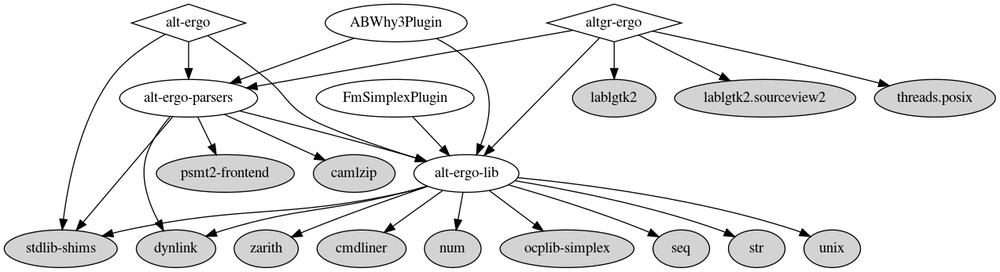

Installation¶
From a package manager¶
Alt-ergo is available on opam, the ocaml package manager with the following command :
opam install alt-ergo
This command will install the Alt-ergo library alt-ergo-lib and the parsers alt-ergo-parsers, as well as other librairies detailled in dependencies.
Since version 2.6.0, Alt-Ergo is compatible with opam 2.2 installations using both Cygwin and MSYS2 on Windows. To setup opam on Windows, please follow the instructions here.
From GitHub releases (Linux and macOS)¶
For convenience, binary releases for Linux and macOS (amd64 and arm64) of Alt-Ergo are provided on the GitHub release page. These binary releases are statically linked and very portable. They are distributed under the same licensing restrictions as the source code.
From sources¶
Dependencies¶
External dependencies graph generated with dune-deps (use make archi for source files dependencies):

To compile the sources of the library alt-ergo-lib and the binary alt-ergo, you will need the
following libraries :
ocaml >= 4.08.0
dune >= 3.0
dune-build-info
dolmen >= 0.9
dolmen_loop >= 0.9
ocplib-simplex >= 0.5
zarith >= 1.4
seq
fmt
ppx_blob
camlzip >= 1.07
menhir
dune-site
cmdliner
psmt2-frontend >= 0.4
stdlib-shims
You can install dependencies using:
$ make deps
and create a development switch with:
$ make dev-switch
Build and Install¶
The steps below will build and install native or bytecode binaries depending on whether ocamlopt is installed or only ocamlc is detected.
Note: these are somewhat obsolete; nowadays you can just use dune
Everything (binaries, plugins, library, …)¶
Compile with
makeInstall with
make install-allUninstall with
make uninstall-all
Alt-Ergo library¶
Compile with
make alt-ergo-libInstall with
make install-lib
Alt-Ergo parsers¶
Compile with
make alt-ergo-parsersInstall with
make install-parsers
Alt-Ergo binary¶
Compile with
make alt-ergoInstall with
make install-bin
Alt-Ergo with Nodejs¶
You can install dependencies using:
$ make js-deps
Compile with
make js-node
For this build rule you will need the following aditional libraries :
js_of_ocaml between 4.0.1 and 5.0.1
zarith_stubs_js
Alt-Ergo web worker¶
Compile with
make js-worker
For this build rule you will need the following aditional libraries :
js_of_ocaml between 4.0.1 and 5.0.1
js_of_ocaml-lwt
zarith_stubs_js
data-encoding
Alt-Ergo web worker small example¶
Compile with
make js-example
This command create a www/ directory in which you can find a small js example running in the index.html file
For this build rule you will need the following aditional libraries :
js_of_ocaml between 4.0.1 and 5.0.1
js_of_ocaml-lwt
js_of_ocaml-ppx
lwt_ppx
zarith_stubs_js
data-encoding
Plugins¶
The steps below will build and install additional plugins (extension .cmxs if ocamlopt is installed or .cma if only ocamlc is detected).
The SatML Plugin¶
satML is now inlined and compiled directly with Alt-Ergo’s source code
The Fm-Simplex Plugin¶
Compile with
make fm-simplexThe Fm-Simplex plugin is currently built and installed at the same time as the alt-ergo binary.
The AB-Why3 parser plugin¶
Compile with
make AB-Why3The AB-Why3 plugin is currently built and installed at the same time as the alt-ergo binary.
You can find more information in the AB-Why3 README
The profiler plugin¶
This plugin has been “inlined” in Alt-Ergo sources.